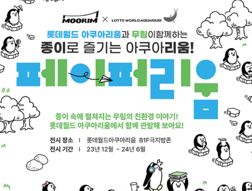
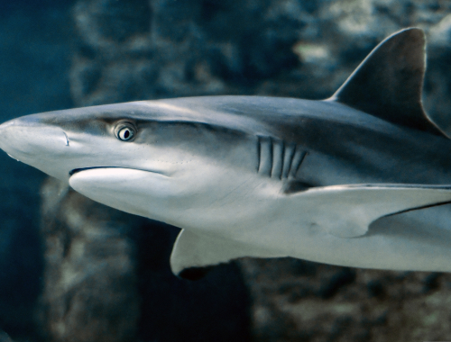
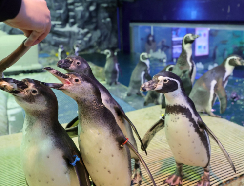
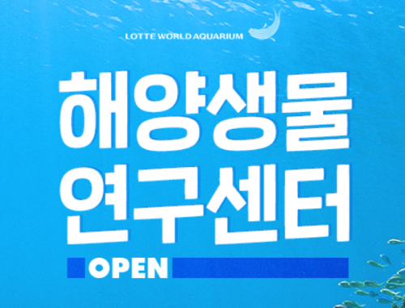
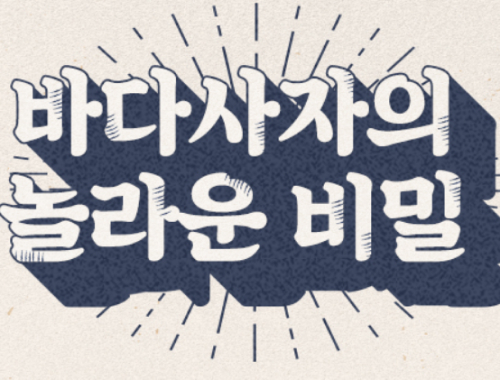
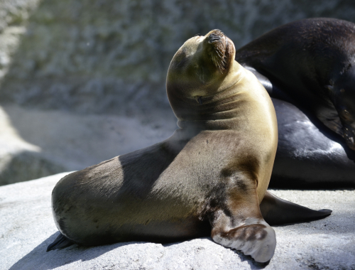

Home
>
프로그램
>
이벤트
이벤트
Event
다양한 이벤트를 체험해 보세요 .
-
- 빛의 길잡이
- 2024-01-01 ~ 2024-03-31
롯데월드 아쿠아리움
B2F 해파리 갤러리 -
- 네셔널지오그래픽 전시
- 2023-12-20 ~ 2025-03-17
B1F 벨루가 엿보기
수조 옆 - 
- 페이퍼리움
- 2023-12-18 ~ 2024-06-30
롯데월드 아쿠아리움
B1F 극지방존 - 
- 샌드타이거샤크와 즐기는 롯데월드 아쿠아리움
- 2024-04-23 ~ 2025-04-23
롯데월드 아쿠아리움 입구,
B2F 메인 수조 앞 - 
- 펭귄유치원 생태설명회
- 2023-05-02 ~ 2024-05-31
매일 16:00 일1회 진행
B1F 극지방존 - 
- 아쿠아리움 해양생물 연구센터 OPEN
- 2022-12-02 ~ 2024-12-31
롯데월드 아쿠아리움
B1F 벨루가 가까이 수조 옆 - 
- 바다사자의 놀라운 비밀
- 2023-02-03 ~ 2024-03-31
매일 오전 11시, 오후 3시
B1F 바다사자 수조 - 
- 아기 물범 토리 합사
- 2023-06-29 ~ 2024-06-30
토리를 볼 수 있는 곳
B1F ~ B2F 바다사자 수조